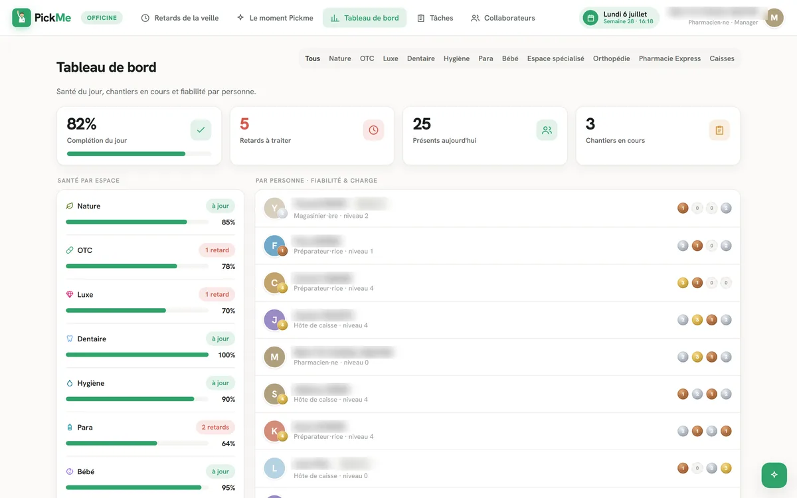

Aller au contenuEmmanuel Mikaelian48.85°N / 2.35°E · REV 2026.2 · ● DISPONIBLE · CDIPharmacien · Produits IA
// SYSTÈME — RETRAIT DU SUPERFLU EN COURS
La complexitén’est pasune fatalité.
Je vois où aller, j’enlève le superflu, et je livre des outils justes
— vite, beaux, et conformes là où ça compte.
Quinze ans pharmacien titulaire, devenu concepteur-développeur :
je spécifie, je code, je déploie. React · TypeScript · Supabase ·
Python · agents. En production dans une officine réelle —
disponible pour une équipe tech santé.
01
Ce que je change dans une équipe
Les specs font la navette entre le métier, le produit et les devs.
Je suis le métier et le dev : quinze ans de comptoir, et je livre le code. Zéro perte en traduction.
L’IA reste au stade du POC qui impressionne en démo.
Mes agents tournent en production, tous les jours, chez de vrais utilisateurs — avec l’humain dans la boucle.
La conformité santé arrive à la fin, et bloque tout.
RGPD et HDS sont dans l’architecture dès la première ligne — pas dans un audit de rattrapage.
Ce que je livre : SMQ qualité en ligne, éligibilité vaccinale E.V.A,
chaîne du froid, planogrammes multi-agents, pilotage comptoir,
pipelines API LGO, RAG sur procédures, dashboards KPI.
Le cadre : hébergement HDS, RGPD, traçabilité, décisions réversibles,
sources citées, humain dans la boucle — conforme par défaut.
SMQ en ligneÉligibilité vaccinaleChaîne du froidPlanogrammes multi-agentsPilotage comptoirPipelines API LGORAG sur procéduresDashboards KPISMQ en ligneÉligibilité vaccinaleChaîne du froidPlanogrammes multi-agentsPilotage comptoirPipelines API LGORAG sur procéduresDashboards KPI
Hébergement HDSRGPDTraçabilitéDécisions réversiblesSources citéesHumain dans la boucleConforme par défautHébergement HDSRGPDTraçabilitéDécisions réversiblesSources citéesHumain dans la boucleConforme par défaut
02
Ma façon de voir
Je crois que le meilleur outil est celui qu’on oublie — parce qu’il s’efface
derrière l’objectif. La plupart des solutions ajoutent de la complexité ;
je passe mon temps à en enlever. Dans la santé, cette
exigence n’est pas un luxe : un outil simple est un outil qu’on utilise,
et un outil qu’on utilise améliore le confort du patient. C’est ce qui rythme
mon travail — ça, et le refus que l’utile soit laid.
03
Réalisations
Conçu, codé, déployé — par une seule personne. Captures réelles : données publiques, démo ou anonymes, jamais de donnée patient.
Simplifié
PRAQ — SMQ en ligne
● En production — usage quotidien
Le système qualité d’une pharmacie vit dans des classeurs que personne n’ouvre.
Un SMQ ISO 9001 piloté en ligne : 16 processus, 115 procédures, score qualité vivant, CAPA, veille ANSM, traçabilité d’audit complète. Utilisé chaque jour par le PRAQ et la direction.
// Capture production — score SMQ réel, veille ANSM intégréeSimplifié
E.V.A — Éligibilité Vaccinale Anonyme
● Déployé — Pharma78Pure
Au comptoir, juger une vaccination oblige à croiser calendrier, profil et contre-indications — de tête, dans l’instant.
Verdict d’éligibilité en moins de 90 secondes, justifié règle par règle sur le calendrier vaccinal 2026, trace anonyme imprimable. Zéro donnée patient stockée.
// Capture production — verdict sourcé, règle citéeSimplifié
Thermosensibles — chaîne du froid
● En production — officine
Frigo en panne : appeler chaque laboratoire, un par un, pour savoir quoi détruire.
574 produits, 131 classes : conduite à tenir immédiate (détruire, stabilité, appel labo), fiche d’excursion horodatée et imprimable. Un seul fichier, zéro backend.
// Capture — recherche « insuline », conduite à tenir par excursionSimplifié
Facing Optimizer — multi-agents
● Livré — v3
Réorganiser un rayon : des centaines de produits, deux logiques qui s’affrontent — le commerce et la clinique.
Deux agents IA argumentent, merchandiser contre pharmacien : 275 produits placés, 231 conflits tranchés sous arbitrage humain, planogramme généré avec ses alertes de bon usage.
// Python · orchestration d’agents Claude Code · sortie Excel + HTML
Le management de l’équipe officinale se fait de tête, entre deux clients.
Complétion du jour, retards, fiabilité par personne, niveaux et médailles : la routine managériale du matin passe sous la minute.
// React · TypeScript · design system dédié

// Capture — tableau de bord manager (données fictives, noms masqués)En cours
API Smart Rx — données LGO
● En cours — juillet 2026
Les données de l’officine restent enfermées dans le logiciel de gestion.
Connexion aux API du LGO (ventes, stocks, commandes) pour générer automatiquement les tableaux de bord mensuels — agrégats seulement, jamais de donnée nominative.
// Python · REST · pipeline testé (pytest)
En cours
RAG sur SOPs
● En construction — données préparées
Des dizaines de procédures que personne n’a le temps de lire.
Un moteur qui répondra aux questions du terrain en langage naturel, sources citées — branché sur les SOPs du SMQ ci-dessus.
// Corpus structuré, prêt pour l’intégration
Et la série continue
● Livrés — même méthode
Dashboards KPI mensuels d’officine — hors-ligne, données embarquées, rien ne quitte le poste
Copilote fiscal — déclaration guidée phase par phase, chaque décision tracée et réversible
Pharmacien titulaire pendant quinze ans, je livre seul des produits
qui tiennent la production. Le besoin, la spec, le code, la conformité,
le déploiement : même cerveau. Dans une équipe
qui construit pour la santé, ce profil supprime la moitié des
allers-retours — et une exigence esthétique assumée fait le reste,
parce qu’un outil beau est un outil respecté.
// La preuve par E.V.A : trois entrées — vérifier un vaccin précis,
évaluer pour un patient donné, consulter le calendrier vaccinal — parce
qu’au comptoir, ce sont trois gestes distincts. Il fallait être derrière
le comptoir pour le voir.
05
Comment je travaille
// React · TypeScript · Supabase · Python · Claude Code & agents · Vercel — choisis pour livrer, pas pour briller.
/ 01
Vite et simple.
Je vise l’objectif, pas la démonstration technique. Chaque outil ci-dessus a été livré en jours ou en semaines — pas en trimestres.
/ 02
Conforme par défaut.
HDS, RGPD, traçabilité : le cadre santé est mon terrain naturel, pas une contrainte ajoutée après coup.
/ 03
Humain dans la boucle.
L’agent propose, l’humain tranche. Chaque décision à enjeu reste validée, tracée, réversible.
06
Contact
Un pharmacien dans votre stack ?
CDI ou mission longue — je cherche une équipe tech qui construit pour
la santé. Décrivez-moi ce que vous bâtissez : je réponds avec du
concret, pas une plaquette.